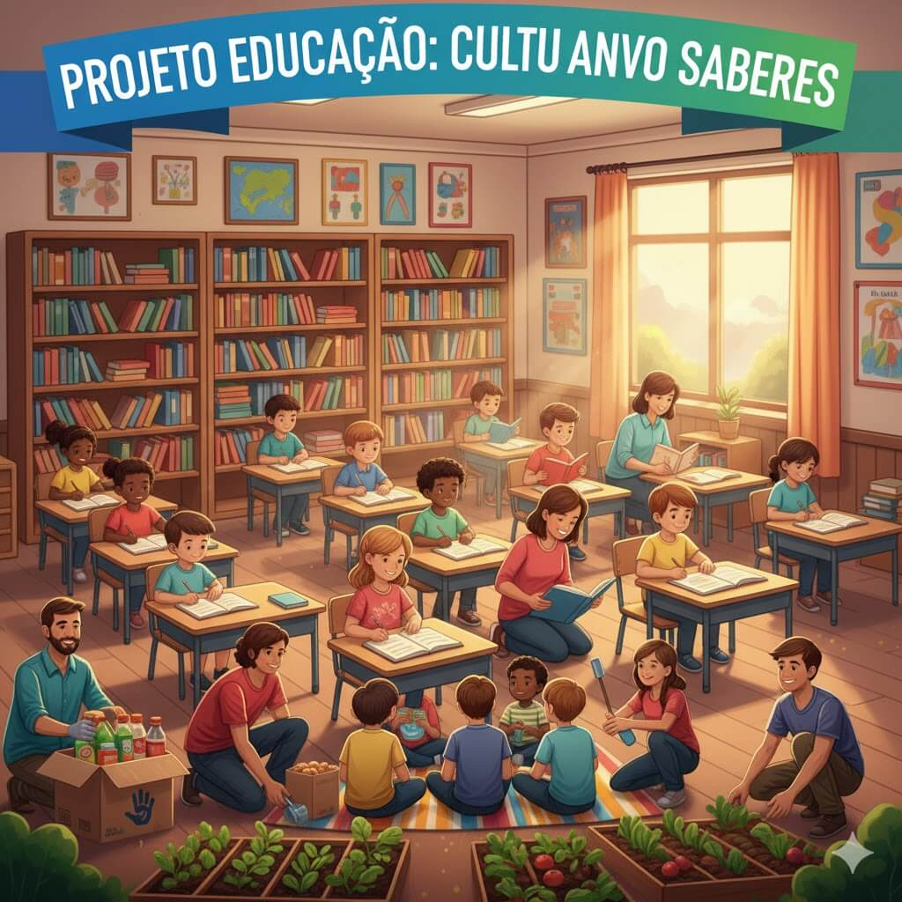

Apoio Escolar e Reforço
Oferecemos aulas de reforço e atividades extracurriculares para manter as crianças na escola e longe da vulnerabilidade.
Saiba MaisConheça as iniciativas que transformam a vida de milhares de pessoas com a sua ajuda.
Oferecemos aulas de reforço e atividades extracurriculares para manter as crianças na escola e longe da vulnerabilidade.
Saiba Mais
Foco na saúde preventiva, oferecendo check-ups regulares e orientação nutricional para a comunidade.
Saiba MaisSua paixão e tempo são os presentes mais valiosos. Encontre a área que mais se encaixa com suas habilidades.
Quero Ser VoluntárioSua contribuição financeira garante a continuidade dos nossos projetos. Qualquer valor ajuda!